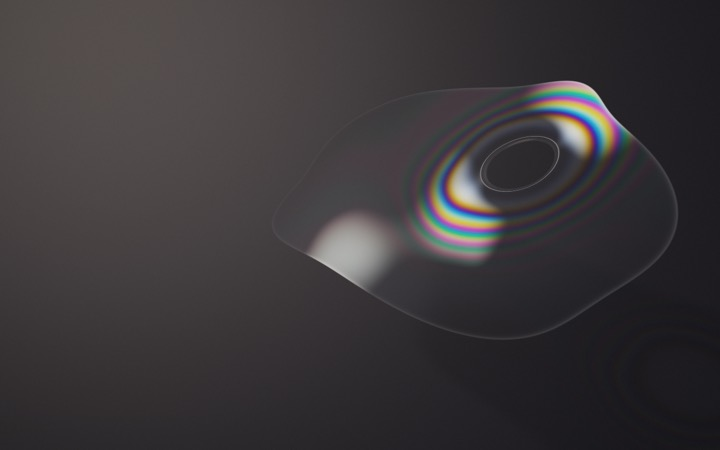

A World Still Aligning
一座漂浮在無盡暮色中的美術館。每個展廳，都遵守一種不同的物理規則。
正在建立暮色中的步道… 可先觀看全部作品
世界仍未完全對齊。謝謝你在間隙中停留。
SPATIAL INDEX ／ 五種空間規則
各展區以短暫淡出銜接。可以隨時改變路線。
CURATORIAL NOTE
18 件「規則之後」＋ 17 件「慢物質」展場採原作停格；選擇「進入作品」才啟動原作即時互動。
從光、形狀與時間，繼續閱讀這三十五件作品。
TAKE YOUR TIME
拖曳畫面環顧；點地面圓環或空白地面前進。點作品或標籤靠近，再選「進入作品」。關閉後回到同一站位與朝向。
鍵盤：方向鍵環顧，W／S 前後走至觀看位置，A／D 側移，Enter 選擇最近作品（出口站位則前往下一廳），Esc 收起面板。Tab 可選全部控制項。
手機使用觸控環顧與定點移動。跨平台移動會短暫淡出。「帶我逛展」每站停留 16 秒，隨時暫停、跳過或退出。
使用平面觀看模式 ↗ · 免 JavaScript 目錄 ↗
原作品內的按鍵屬於作品。若焦點在作品內，請使用上方「返回展間」關閉。「減少動態」控制展場鏡頭；原作依系統設定或自身的暫停控制。
COLLECTION ／ SECOND EDITIONS ONLY
沒有符合的作品。
正在載入原作品…
原作品暫時無法啟動。你可以返回展間或開啟原作品頁。